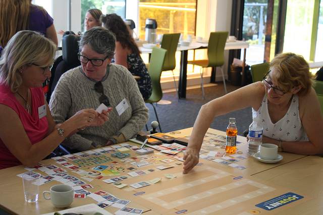

Our Journey is a tool to support students to chart the highs and lows of their study journeys and the important events that happened along the way.
The aim is to produce a simple and accessible structure for students to represent the events that occurred in their study and their experience of these. It is being developed for use by all students and for use across all educational institutions.
Try out the current version of the online Journey Creator (Currently only tested for compatibility with Chrome. There are known issues with Firefox).
Download the printable versions of the cards and poster
The design has been informed by research conducted to understand the challenges faced
by disabled students at The Open University, and workshops and discussions with a range of stakeholders across HE.
HEIF Stimulating Knowledge Exchange funding has supported the development of this project. We have been grateful to received help and input from a wide range of people. Particular thanks to the OU Students Association, the Disabled Students Group and Diversity and Ability for giving their energy and inspiration to support this project.

We are keen to help people to use the tools we are developing, and to create new collaborations. Contact us at: tim.coughlan@open.ac.uk and kate.lister@open.ac.uk